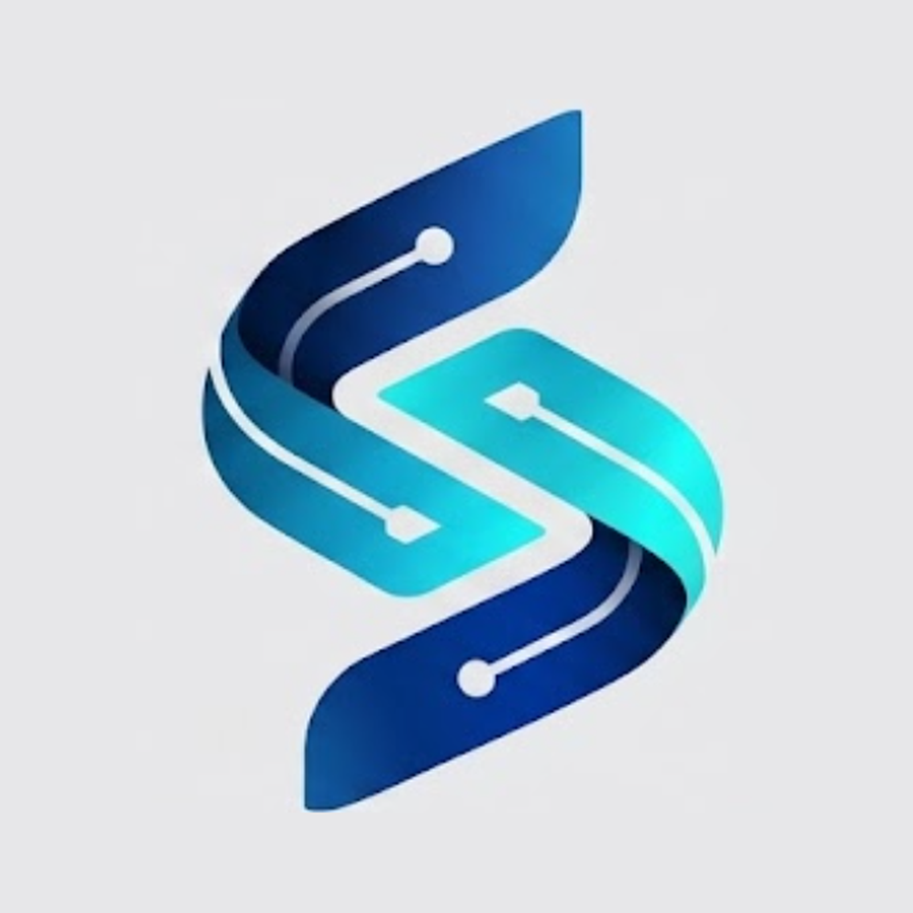

Last updated: 2026-10-20
SinergIA ("we") is a software service operated by VERMILION SOUTHAMERICAN ROUTES SAS (RUC 1793215456001), De los Lirios N45-206 y Julio Arellano, Tercer Piso, Monteserrín, Quito 170503, Ecuador. SinergIA connects businesses to the WhatsApp Business Platform (Cloud API) and answers their customers' messages with an AI assistant on the business's behalf. Contact: info@vermilionroutes.com.
We do not sell personal data and we do not use it for advertising.
Conversation records are kept while the business uses SinergIA and for as long as needed to handle the enquiry or booking, and are then deleted or anonymised. Technical deduplication records expire automatically.
You can ask for access, correction or deletion of your data at any time. See how to delete your data or write to info@vermilionroutes.com. Writing STOP in the WhatsApp chat stops automated replies.
We will publish any change to this policy on this page with its update date.
Última actualización: 2026-10-20
SinergIA es un servicio de software operado por VERMILION SOUTHAMERICAN ROUTES SAS (RUC 1793215456001), De los Lirios N45-206 y Julio Arellano, Tercer Piso, Monteserrín, Quito 170503, Ecuador. Conecta empresas con la plataforma WhatsApp Business (Cloud API) y responde a sus clientes con un asistente de IA en nombre de la empresa. Contacto: info@vermilionroutes.com.
No vendemos datos personales ni los usamos para publicidad.
Meta (plataforma WhatsApp Business), Google (Firebase/Firestore y API de Gemini), Vercel (alojamiento) y un proveedor de correo SMTP (avisos).
Las conversaciones se guardan mientras la empresa usa SinergIA y el tiempo necesario para atender la consulta o la reserva; después se borran o se anonimizan.
Puedes pedir acceso, corrección o borrado de tus datos cuando quieras: cómo borrar tus datos o escribe a info@vermilionroutes.com. Si escribes STOP en el chat de WhatsApp, el asistente deja de responder.